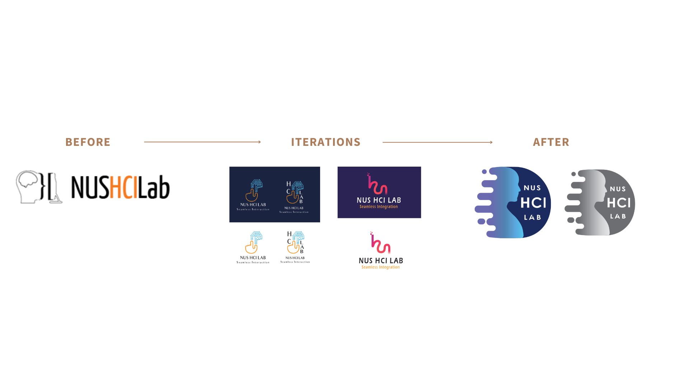
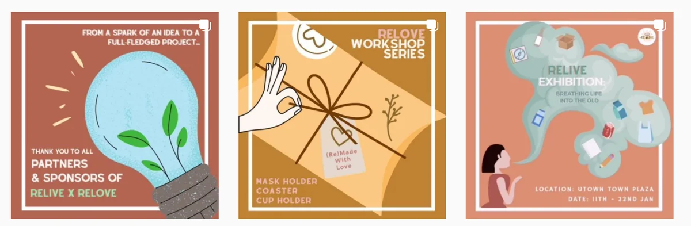
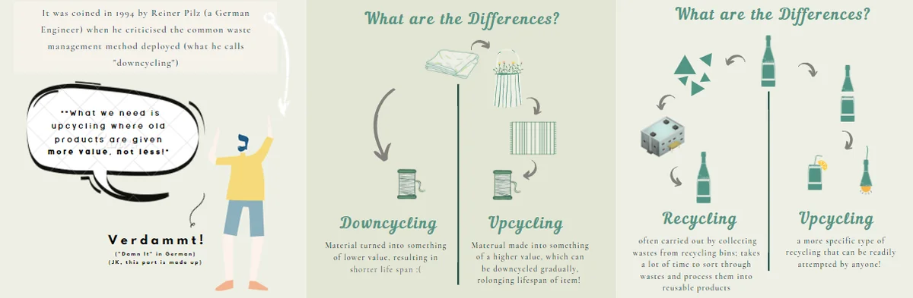
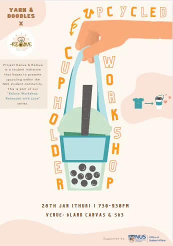
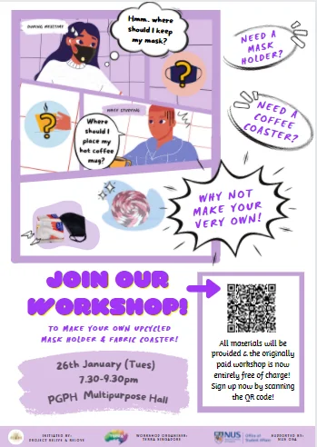
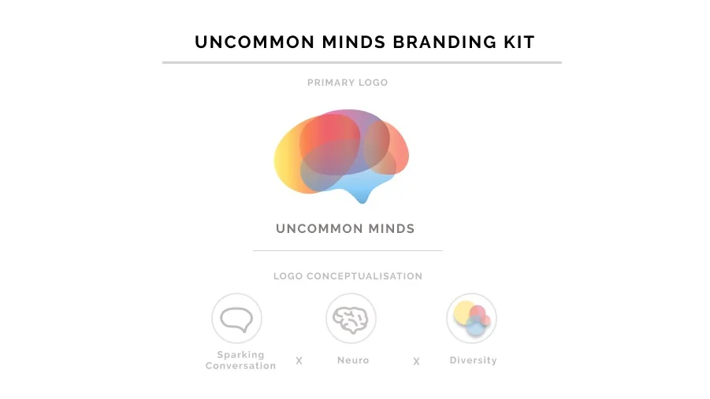
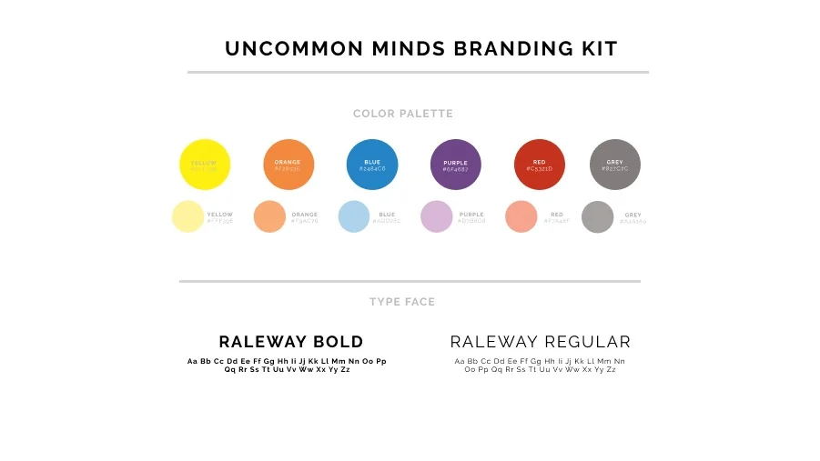

Visual design
I like making ideas clearer through design.
Select an image to see it full size.
NUS HCI Lab
I redesigned the lab’s visual identity in 2020, working with researchers to turn their shared vision into a new logo. I also contributed to newsletters and a promotional film with other design interns.

Relive × Relove
I led the visual design for a campus sustainability campaign, from its identity to posters, workshop materials, and social content.




Uncommon Minds
I helped a nonprofit celebrating neurodiverse people refresh its logo and visual kit.

